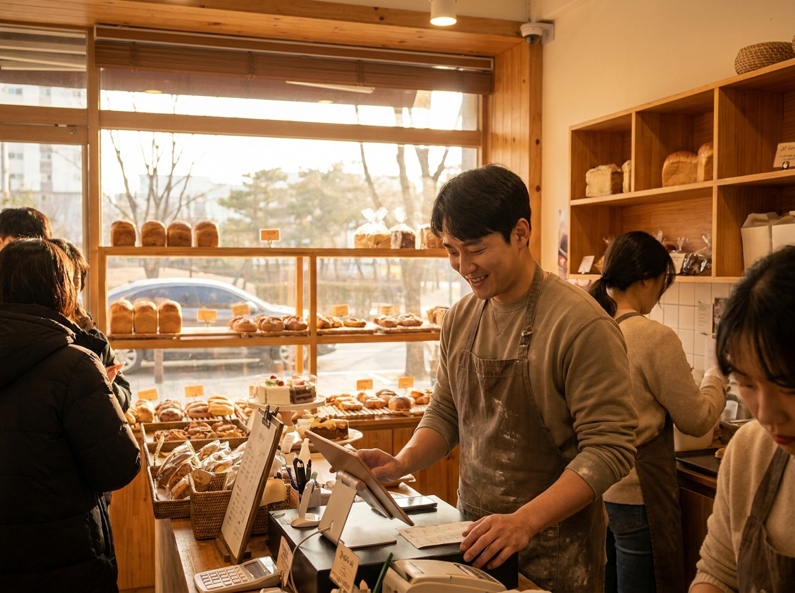
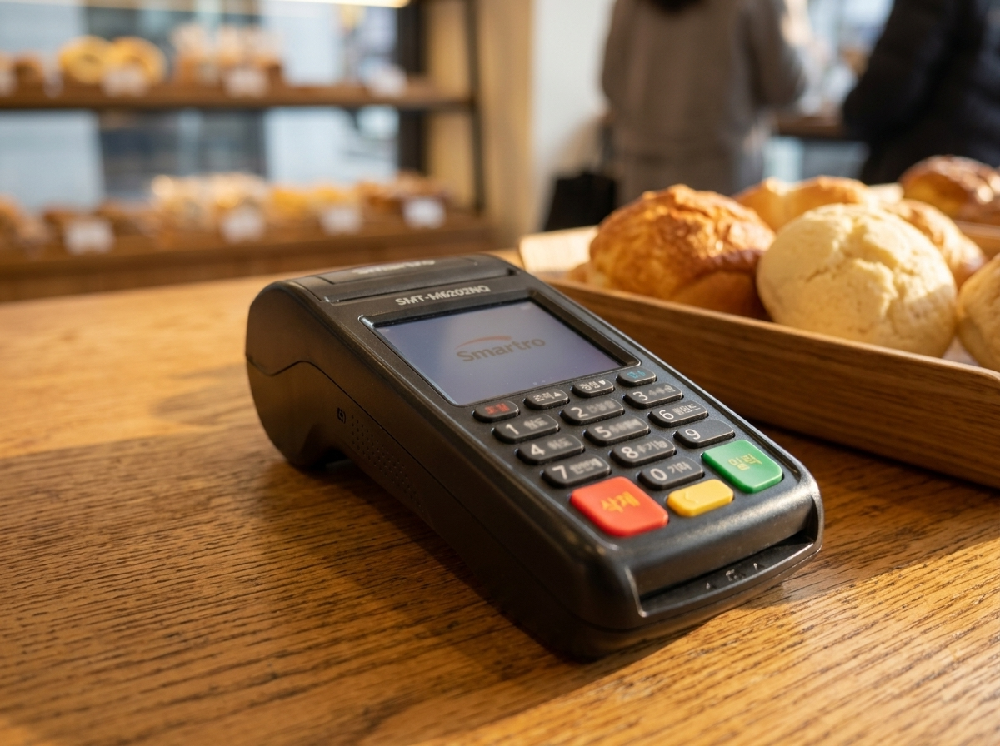

감으로 하는 장사는 이제 그만, 포스 매출 데이터로 잘 팔리는 메뉴 찾는 법
결론부터 말씀드리면, 매장을 키우는 가장 확실한 방법은 이미 우리 포스 안에 쌓여 있는 '매출 데이터'를 들여다보는 것입니다. 어떤 메뉴가 언제 잘 팔리고, 어떤 시간대에 손님이 몰리는지를 숫자로 확인하면, 감으로 하던 결정을 근거 있는 운영으로 바꿀 수 있습니다. 저희 누리네트웍스는 14년간 수도권 3만여 매장의 결제 현장을 함께해 오면서, 매출이 꾸준히 오르는 매장일수록 포스 데이터를 습관처럼 본다는 걸 확인했습니다. 이 글에서는 별도의 비싼 프로그램 없이, 포스에 이미 있는 데이터만으로 매장을 개선하는 실전 방법을 정리했습니다.

포스는 계산기가 아니라 '매장의 기록장'입니다
많은 사장님이 포스를 단순히 '카드 긁고 영수증 뽑는 계산기'로만 씁니다. 하지만 포스에는 매일의 장사가 고스란히 기록됩니다. 무엇이 몇 개 팔렸는지, 언제 붐볐는지, 어떤 결제수단을 많이 쓰는지. 이 기록을 읽는 순간 포스는 매장을 진단하는 도구가 됩니다.
예를 들어 '요즘 매출이 좀 떨어진 것 같다'는 막연한 느낌도, 데이터를 보면 원인이 또렷해집니다. 특정 메뉴 판매가 준 것인지, 평일 저녁 손님이 빠진 것인지, 객단가가 낮아진 것인지가 숫자로 드러나기 때문입니다. 문제가 보여야 해결책도 나옵니다. 감이 아니라 기록을 근거로 움직이는 것, 그것이 오래가는 매장의 공통점입니다.
포스 데이터에서 꼭 봐야 할 5가지
포스 매출 데이터를 볼 때, 아래 다섯 가지만 챙겨도 매장이 달라집니다.
| 볼 항목 | 무엇을 알 수 있나 |
|---|---|
| 메뉴별 판매량 | 효자 메뉴와 안 팔리는 메뉴 구분 |
| 시간대별 매출 | 붐비는 시간·한가한 시간 파악 |
| 요일별 매출 | 이벤트·인력 배치 기준 |
| 객단가 | 손님 1명당 평균 결제액 흐름 |
| 결제수단 비중 | 간편결제·카드 선호도 확인 |
메뉴별 판매량을 보면 이른바 '효자 메뉴'가 보입니다. 잘 팔리는 메뉴는 더 눈에 띄게 배치하고, 오래 안 팔리는 메뉴는 과감히 정리하거나 개선할 수 있습니다. 시간대·요일별 매출을 보면 한가한 시간에 할인 이벤트를 걸거나, 붐비는 시간에 인력을 더 두는 식으로 대응할 수 있습니다. 객단가가 떨어지고 있다면 세트 구성이나 추천 메뉴로 끌어올릴 여지가 있습니다. 이렇게 숫자 하나하나가 구체적인 행동으로 이어집니다.

데이터를 매출로 바꾸는 실전 순서
데이터를 보는 것에서 그치지 않고 매출로 연결하려면, 순서가 중요합니다.
첫째, 주간 단위로 확인하는 습관을 만듭니다. 매일 볼 필요는 없습니다. 일주일에 한 번, 정해진 시간에 지난주 매출을 훑어보는 것만으로 충분합니다. 둘째, 한 번에 하나씩 바꿉니다. 데이터를 보고 여러 가지를 동시에 바꾸면 무엇이 효과였는지 알 수 없습니다. '안 팔리는 메뉴 하나 교체'처럼 작게 바꾸고 결과를 확인하세요. 셋째, 바꾼 뒤 다시 데이터로 검증합니다. 새 메뉴가 실제로 팔리는지, 이벤트가 한가한 시간을 채웠는지 숫자로 확인하면, 다음 결정이 더 정확해집니다.
이런 운영이 가능하려면 매출이 한곳에 정확히 쌓이는 포스 환경이 먼저입니다. 카드·현금·간편결제가 뿔뿔이 흩어져 있으면 데이터를 읽기 어렵습니다. 누리네트웍스는 수도권을 직접 방문해 설치·관리하는 포스·결제 단말 전문 업체로, 다양한 결제수단이 포스에 깔끔하게 모이도록 매장 환경을 구성해 드립니다. 무선 카드단말기처럼 매장 어디서나 이동하며 결제해도 매출이 하나로 집계되면, 데이터 분석의 기초가 든든해집니다. 정확한 가격은 매장 구성에 따라 달라지므로 상담 시 안내해 드리며, 토스단말기·네이버단말기는 월 0원·약정 없음으로 부담 없이 함께 쓰실 수 있습니다.
자주 묻는 질문(FAQ)
Q. 데이터 분석이라니 어렵고 복잡할 것 같아요.
전혀 어렵지 않습니다. 대부분의 포스는 메뉴별·시간대별 매출을 표나 그래프로 자동으로 보여 줍니다. 엑셀이나 통계 지식 없이도, 화면에서 숫자를 눈으로 확인하는 것만으로 시작할 수 있습니다.
Q. 작은 매장도 데이터를 볼 필요가 있나요?
오히려 작은 매장일수록 효과가 큽니다. 한정된 자원으로 운영하는 만큼, 잘 팔리는 것에 집중하고 안 팔리는 것을 정리하는 판단이 매출에 바로 반영되기 때문입니다.
Q. 지금 쓰는 포스에 이런 기능이 없으면요?
포스에 따라 제공하는 통계 범위가 다릅니다. 지금 기기에서 어떤 데이터를 볼 수 있는지 확인해 드리고, 필요하면 매장에 맞는 구성을 함께 제안해 드립니다. 부담 없이 문의 주세요.
숫자로 성장하는 매장, 함께 만들어요
장사는 감이 아니라 기록으로 성장합니다. 그 기록을 정확히 쌓고 읽기 쉽게 만드는 포스 환경을 누리네트웍스가 함께 마련해 드리겠습니다. 수도권 어디든 직접 방문해 매장 상황을 살펴보고 안내해 드리니, 부담 없이 문의 주세요.
- 📞 전화상담 1544-7754
- 🌐 홈페이지 nwpos.co.kr
- 📷 인스타그램 instagram.com/nurinetworkspos
- ▶️ 유튜브 youtube.com/@nurinetworks


이미지1-매장: 오후 시간 밝은 베이커리 카운터에서 태블릿으로 매출을 확인하는 30대 남성 사장님 장면
이미지2-제품: 매장 테이블 위 무선 카드단말기를 가까이서 담은 제품 컷
이미지3-사용: 사장님이 무선 카드단말기를 들고 매장 안을 이동하며 결제하는 순간